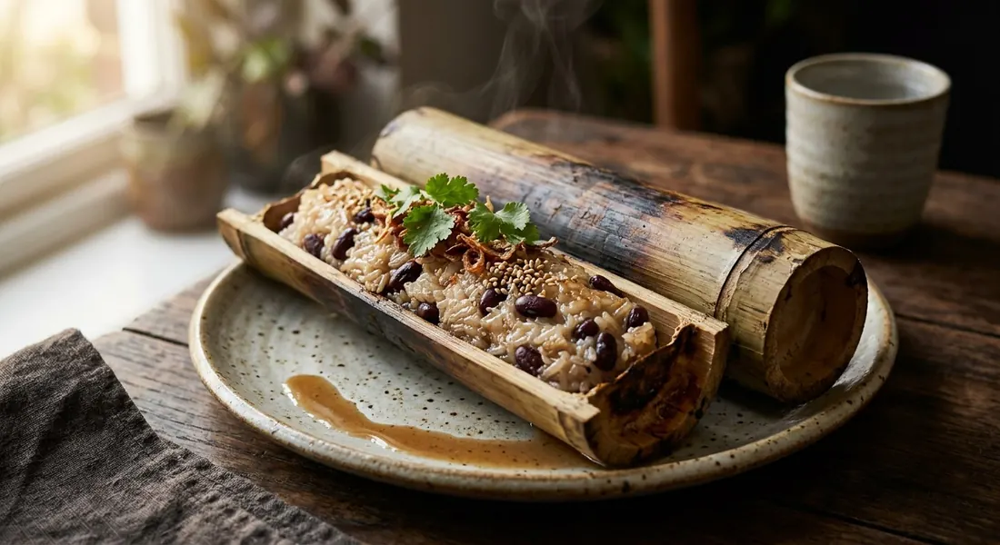

Sticky rice soaked in sweet, salted coconut milk with black beans, packed into a bamboo tube and roasted upright over charcoal — a snack that cooks itself inside the wood.

ข้าวหลาม is both the dish and the container: ข้าว, rice, and หลาม, to roast in bamboo. Sticky rice and black beans are soaked in coconut milk, plugged into a green bamboo tube with pandan leaves and coconut husk, and stood upright over charcoal. The bamboo steams the rice from the inside, the milk splits into its oil, and the inner membrane of the bamboo — what Thais call the soft lining that lets the rice peel free — perfumes every grain. The tube is roasted, shaved, peeled, and eaten from the hand.
Its spiritual home is Nong Mon in Chonburi, where Thairath records the story: villagers, free from the rice-planting season, began selling khao lam at the annual Nong Mon shrine fair, and the place became synonymous with the sweet. The bamboo itself is chosen for a soft inner membrane — traditionally brought in from Cambodia, or from Tak and Kanchanaburi — so the cooked rice releases cleanly. The legendary Nong Mon shops still roast over charcoal from first light, and Wongnai's profile of แม่ไข่คงศักดิ์, one of the old-line makers, notes the recipe is passed down untouched.
Every region has its version, and the dish travels well: Thairath notes that in Lanna country it was offered to monks at the full-moon festival of the fourth lunar month. Nong Mon's innovation was the fillings — sangkhaya custard, red bean, banana, taro, young coconut — sold in single-serve sizes as the classic souvenir of the eastern seaboard.
| Thai | English | Amount |
|---|---|---|
| ข้าวเหนียวขาว | White sticky rice, soaked and drained | 500 g |
| กะทิสด | Fresh coconut milk | 400 ml |
| น้ำตาลทราย | Sugar | 100 g |
| เกลือป่น | Salt | 2 tsp |
| ถั่วดำต้มสุก | Black beans, cooked | 120 g |
| กระบอกไม้ไผ่ | Bamboo tubes, ~25 cm | 10 |
| ใบเตย / กาบมะพร้าว | Pandan leaves and coconut husk, for the stoppers | as needed |
The classic Nong Mon mix (Thairath / Nong Mon market): 10 cups sticky rice, 4 cups fresh coconut milk, 1 tbsp salt, ½ cup sugar — with ½ cup black beans, or lotus seeds, water chestnuts or young coconut in their place. The coconut-shell bake (TrueID): 320 g white and 100 g black sticky rice steamed first, then folded with coconut meat, taro, cooked black beans, coconut sugar and coconut cream, spooned into a coconut shell and baked 15 minutes at 150–160°C under a coconut-cream topping — no bamboo, no charcoal. The pan version (Thairath): the same rice and coconut milk simmered in a frying pan like a stiff porridge, for when there is no bamboo to be had.
How long to soak the rice. Nong Mon's shop method soaks only five minutes — the overnight rest in the tube does the real work. Aroifin soaks a full hour before filling. TrueID's coconut-shell version steams the rice instead of soaking-and-roasting, after three hours in water. All three arrive at tender rice by different timetables.
The rest inside the tube. Thirty minutes (Aroifin), five hours (Thairath's pandan-tube recipe), or overnight (Nong Mon). This is the biggest split in the whole dish — the rest decides how much milk the rice absorbs before the fire takes over.
The sugar. Thairath, Nong Mon and Aroifin all use white sugar. TrueID's coconut-shell khao lam uses coconut sugar and syrup sugar instead, for a darker, caramel note. No source sweetens heavily — the salt is what you taste first.
The vessel. Bamboo over charcoal is the dish. But Thairath also teaches the pan version (rice and coconut milk stirred together in a skillet, no tube at all) and the steamed version (the same mix steamed in any container), and TrueID bakes it in a coconut shell in the oven. All three still call it khao lam.
Roasting time. Thirty to 45 minutes for Thairath's pandan tubes, 40–50 for Aroifin, a full hour for Nong Mon — a spread explained by tube size, rest time and fire, and all judged the same way: the bamboo turning yellow, and the smell of coconut oil in the smoke.
This recipe is translated from the following Thai-language sources. Where they disagree, we've said so.
1. Thairath Lifestyle — "วิธีทำข้าวหลาม ทำยังไง ใช้อะไรบ้าง ดูสูตรไว้ทำเองหรือทำขาย" (the Nong Mon formula and its history; the pandan-tube, pan and steamed versions) — thairath.co.th
2. Aroifin — "วิธีทำ ข้าวหลาม เมนูของว่าง สูตรหวานมัน อร่อยถูกปาก" (the tube recipe used here, the layering and turning technique) — aroifin.com
3. ตลาดหนองมน — "วิธีการทำข้าวหลาม" (the overnight-rest shop method; topping up the coconut milk mid-roast) — nongmonmarket.wordpress.com
4. Wongnai News — "ล้วงลึก! แม่ไข่คงศักดิ์ ตำนานข้าวหลามหนองมน สูตรโบราณ" (the legendary Nong Mon shop and its charcoal ritual) — wongnai.com
5. TrueID Food — "วิธีทำ ข้าวหลามในลูกมะพร้าว สูตรอร่อยทำง่าย ทำขายได้เลย" (the coconut-shell version with coconut sugar and a coconut-cream topping) — food.trueid.net